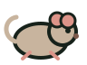
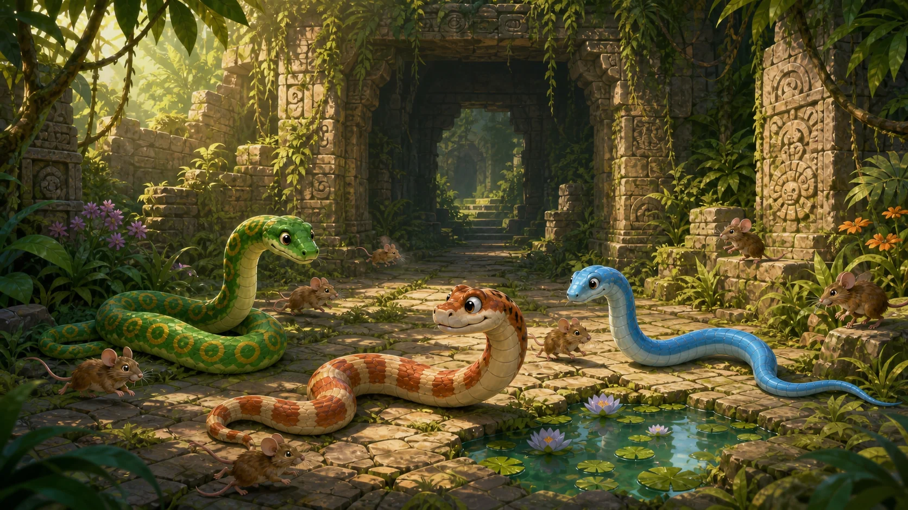
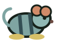
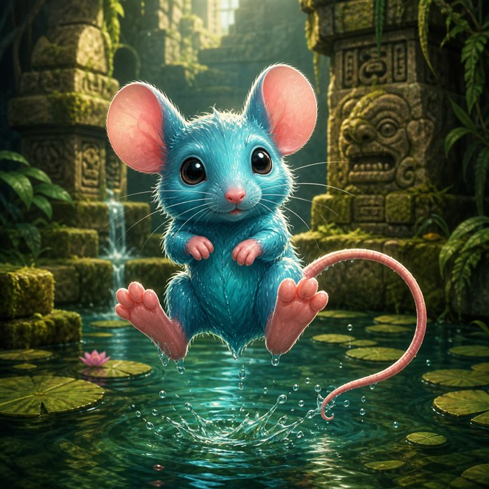
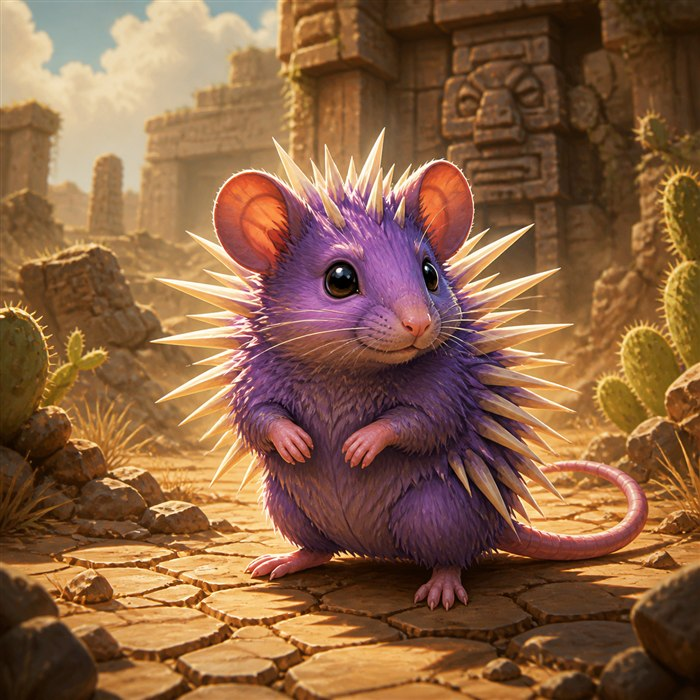
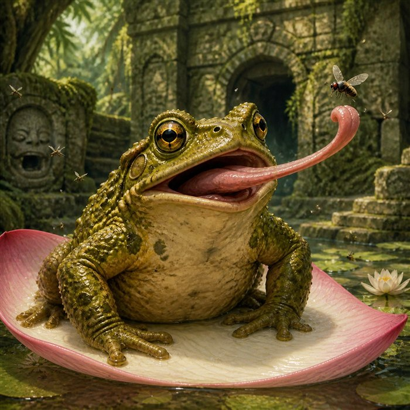

Temple mouseLevel 1
A common ruins scavenger. Catch it to grow by one segment.

THE OVERGROWN TEMPLE

A common ruins scavenger. Catch it to grow by one segment.

Gets one 50% chance to leap two tiles when approached.

Gets one 60% chance to shift from its puddle to another.

Never jumps. Fires one spike up to three tiles; bite after it fires.

Sometimes sits on a lotus petal hunting flies. Catch it for up to two health segments.
Retreats when approached; stays outside only after ten mice.